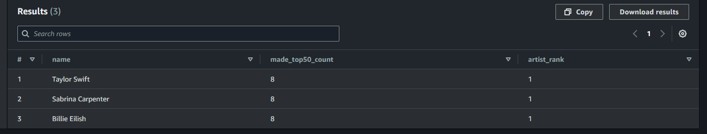
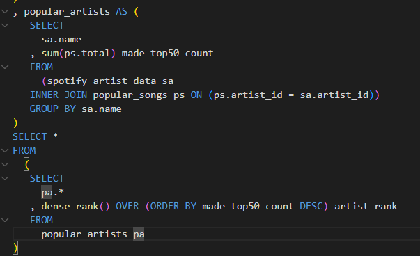
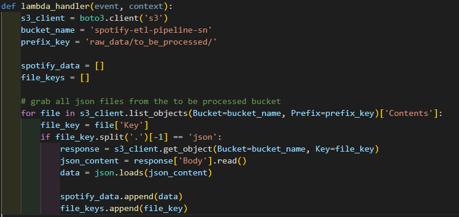

Spotify Serverless ETL Pipeline: AWS Data Engineering Project Demo
Welcome to my project demo showcasing a fully serverless ETL pipeline built using AWS and Python. This project demonstrates advanced skills in solution architecture, ETL pipeline engineering, and leveraging AWS tools for seamless data integration and analytics. The pipeline pulls data from Spotify's API, transforms it, and stores it in S3, with Glue Crawlers and Athena enabling robust analytics. Explore the demo video below for a walkthrough or visit the GitHub repository for in-depth insights.
This project demonstrates a serverless ETL pipeline using AWS to automate data processing from Spotify. By leveraging AWS Lambda, S3, Glue, and Athena, the solution efficiently extracts, transforms, and analyzes daily top 50 songs playlist data, eliminating manual processes and ensuring data accuracy.
The pipeline provides a scalable foundation for various use cases, from business analytics to potential AI model training, freeing up valuable resources and enabling faster decision-making.
Solution Architecture
The Spotify Serverless ETL pipeline leverages a fully automated architecture using AWS services to efficiently process Spotify API data. The process begins with AWS Lambda functions that are triggered by CloudWatch Events to pull data from the Spotify API. This data is then transformed using Python scripts running within the Lambda environment.
Once transformed, the data is stored in Amazon S3 buckets, which act as the central data repository. AWS Glue Crawlers automatically catalog the data, creating a schema that enables querying with Amazon Athena. This serverless architecture ensures seamless scalability and flexibility, allowing for integration with various downstream analytics tools and potential machine learning applications.
Figure 1: Pipeline architecture from data collection to query-ready.
Data Analytics with Amazon Athena
At the heart of the Spotify Serverless ETL pipeline is Amazon Athena, which provides a powerful and efficient way to analyze the accumulation of the daily top 50 songs playlist. After extracting and storing detailed information about albums, songs, and artists in CSV files on Amazon S3, Athena allows for immediate querying and analysis.
This setup offers a serverless & scalable solution, enabling users to derive insights from the latest music trends without needing extensive infrastructure or traditional databases. With the ability to quickly run SQL queries on the data, businesses can explore streaming patterns, identify trends, and make informed decisions swiftly.
Looking ahead, the pipeline's integration with Athena opens up opportunities for further advancements, such as integrating with BI dashboarding tools for real-time analytics or using the data for training AI models. This flexibility ensures that the pipeline not only meets current analytical needs but also adapts to future business requirements.
Impact and Future Potential
The Spotify Serverless ETL pipeline delivers significant benefits in terms of data processing efficiency and scalability. By automating the extraction and transformation of Spotify's top 50 playlists, the pipeline ensures data accuracy and provides immediate insights into music trends without the need for manual intervention.
This solution not only reduces operational overhead but also lays the groundwork for future developments. With its flexible architecture, the pipeline can easily integrate with additional AWS services or third-party tools to enhance data analytics capabilities. Potential future directions include:
Integration with BI tools for real-time dashboards and reports.
Developing AI models for predictive analytics based on music data trends.
Expanding the data scope to include user engagement metrics for more comprehensive analysis.
By prioritizing a serverless approach, this project exemplifies how modern data engineering practices can create scalable and adaptable solutions that meet evolving business needs.
Screenshots


Figure 7: Querying top 3 artists ranked by appearances in the Spotify Daily Top 50 Playlist with Amazon Athena for fast and actionable insights.

Figure 6: Sample transformation logic deployed on AWS Lambda.